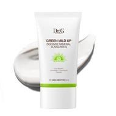

미네랄 자외선 차단제 vs 화학적 자외선 차단제, 선택 방법

미네랄 자외선 차단제 vs 화학적 자외선 차단제 필터까지 내려와, 그리고 닥터지는 데일리 페이스 선크림을 만들고, 그린 드래곤 선 플러스 SPF50+ PA++++, 미네랄 측면에서. 미네랄 포뮬러는 산화아연이나 이산화티타늄에 의존하며, 퍼지자마자 작용하며 일반적으로 선택됩니다. 민감성 또는 알레르기성 피부. 화학 공식은 유기 필터를 사용하여 눈에 보이지 않게 혼합되며 잘 견디는 피부에 적합합니다. 둘 다 충분히 착용하면 보호됩니다.
01.
핵심 차이점: 미네랄 필터와 화학 필터
가장 큰 차이점은 유형입니다. UV 필터. 미네랄 자외선 차단제는 산화 아연, 이산화 티타늄 또는 두 가지 무기 필터를 모두 사용합니다. 화학적 자외선 차단제는 유기 필터를 사용합니다. [1].
그것들을 구별하려면 병을 뒤집어 활성 성분을 읽으십시오. 산화아연이나 이산화티타늄은 광물을 의미하고, 그 외의 것은 화학물질을 의미합니다., 둘 다 함께 하이브리드를 의미합니다.
병의 앞면은 뒷면보다 정보가 적으므로 성분 목록을 살펴보는 것이 좋습니다. 어떤 가족이 속해 있는지 알고 나면 선택이 더 쉬워집니다. 각 가족마다 고유한 느낌, 고유한 시기, 고유한 스킨이 있기 때문입니다. 충분히 바르고 다시 바르면 둘 다 보호됩니다. 피부과 전문의인 Taylor Bullock 박사는 다음과 같이 말했습니다. 당신에게 가장 좋은 자외선 차단제는 당신이 기꺼이 사용하는 것입니다 [4].
02.
미네랄 자외선 차단제란?
미네랄 자외선 차단제는 UV 필터가 있는 자외선 차단제입니다. 산화 아연, 이산화 티타늄 또는 둘 다. 적용하자마자 작동됩니다 [4], 산화아연은 광안정성이 매우 높습니다. [1], 피부과 의사들이 종종 권장하는 민감하고 알레르기성 피부를 위한 두 필터 모두 잘 견디기 때문에 [6].
미네랄이 평범해졌네요 피부가 따갑거나, 반응하거나, 쉽게 갈라지는 경우 첫 번째 선택. 산화아연도 기름을 흡수하다, 그래서 한낮에 윤기나는 피부에 잘 어울려요 [8].
피부과 전문의인 아니샤 파텔(Anisha Patel) 박사는 이에 대해 한 가지 더 좋아합니다. 피부에 여전히 미네랄 자외선 차단제가 보이면 효과가 있는 것입니다. [5]. 미네랄 광보호에 대한 증거를 검토한 결과, 미네랄 자외선 차단제가 매력적이고 효과적인 선택이라는 결론이 나왔습니다. [2]. 그리고 소비자 순위에서 미네랄 포뮬러의 점수가 더 낮다면 테스트 방법을 확인하세요. 장시간 물에 담근 후 SPF를 측정하는 등의 일부 방법은 방수 기능을 갖춘 포뮬러를 선호하기 때문입니다. [3].
03.
화학적 자외선 차단제란?
화학적 자외선 차단제는 필름 내에서 자외선을 흡수하는 유기 UV 필터를 기반으로 한 자외선 차단제입니다. [1]. 그것 쉽게 혼합되고 눈에 띄는 잔여물이 남지 않습니다. 종종 더 나은 방수 기능을 제공합니다. [4]. 피부과 전문의인 테일러 블록(Taylor Bullock) 박사는 도포 후 약 20분 정도 지나면 효과가 나타나도록 조언합니다. [4].
화학적 자외선 차단제는 피부에 잘 견디며 메이크업 아래, 피부 톤이 짙은 경우, 장시간 수영 및 운동 시 누구도 볼 수 없는 마무리를 원하는 피부에 적합합니다. 자외선 차단제에 대한 반응이 없었고 단순히 자외선 차단제만 사용하고 싶다면 좋은 선택입니다. 가장 가벼운 느낌.
당신이 어느 가족을 선택하든 파텔 박사의 조언은 유효합니다. 완벽한 자외선 차단제는 아니더라도 아무것도 바르지 않는 것보다는 바르는 것이 좋습니다 [5].
04.
닥터지 선크림 제품군을 만나보세요
닥터지 그린 드래곤 선 플러스 SPF50+ PA++++ 닥터지의 데일리 미네랄 자외선 차단제인 Broad Spectrum SPF 50+는 아연이 함유된 100% 순수 미네랄 UV 필터와 피부 장벽을 강화하는 Ectoin D를 함유한 제품입니다. 임상적으로 입증된 순한 피부에도 민감한 피부에도 사용 가능합니다. 국내 No.1 자외선 차단제 브랜드**.
그것은 무겁지 않은 미네랄. 끈적임 없는 텍스처로 짧은 베일이 단 몇 초 만에 블렌딩되어 메이크업 아래 매끈한 베이스를 선사하며, 지나치게 건조하지 않고 윤기를 컨트롤해준다고 김희진 박사는 말한다. [7]. PA++++는 한국 UVA 등급 중 최고 등급이다. 한국 쇼핑객들이 계속해서 선택하고 있으며, 2019년, 2020년, 2023년 올리브영 어워드 선케어 부문 1위.
 |
|
| 기준 | 그린 드래곤 선 플러스 SPF50+ PA++++ |
|---|---|
| 피부 고민 | 민감하거나 지성 피부를 포함한 매일 UV 노출. |
| 효능 | 유해한 자외선과 환경 손상으로부터 피부를 보호합니다. |
| 성분 | 아연과 엑토인 D가 함유된 100% 순수 미네랄 UV 필터. |
| 조직 | 끈적임 없이 가벼운 미네랄 텍스처. |
| 사용방법 | 매일 아침 스킨케어 마지막 단계로. |
| 입증된 결과 | 임상적으로 입증된 순함, 민감한 피부에도 사용 가능‡ |
05.
미네랄 자외선 차단제 사용법
매일 아침 스킨케어 마지막 단계에서 미네랄 자외선 차단제를 얼굴, 목, 귀에 넉넉히 펴 발라줍니다. 그것 필름이 균일해지자마자 보호합니다., 그래서 밖으로 나가기 전에 대기 시간이 없습니다. 그런 다음 라벨의 지시에 따라 다시 적용하십시오.
- 언제: 매일 아침, 보습 후, 메이크업 전 [7].
- 어떻게: 넉넉하게 도포한 후 필름이 균일해 보일 때까지 고르게 펴 바릅니다.
- 어디: 얼굴, 목, 귀, 귀 뒤.
- 빈도: 매일, 일년 내내 라벨의 지시에 따라 다시 바르십시오. 특히 수영이나 땀을 흘린 후에는 더욱 그렇습니다.
그린 마일드 업 선 플러스 닥터지의 프로그램을 종료하는 Protect 단계이기도 합니다. 준비, 진정, 보호 루틴.
06.
루틴 쇼핑하기
준비, 달래기, 보호: 의사의 세 가지 단계를 일상적인 순서로 진행합니다.
- 1단계. 준비 – 브라이트닝 필링젤: 주 1~2회.
- 2단계. 진정시키기 – R.E.D 블레미쉬 클리어 수딩 크림: 아침 저녁.
- 3단계. 보호 – 그린 드래곤 선 플러스 SPF50+ PA++++: 매일 아침.


07.
메모 및 출처
* 국내 No.1 스킨케어 브랜드: Worldpanel by Numerator(구 Kantar Korea), 패널 연구, 2020.03.23~2025.03.23, 한국 침투 기준.
** 올리브영 선케어 부문; 닥터지 브랜드 참조(NBB 브리핑, 2026년 7월).
‡ 그린 드래곤 선 플러스 SPF50+ PA++++, 민감성 피부 테스트 수행: 피부과, 비면포성, 민감성 피부, 저자극성, 눈 자극, 소아 및 피부과 절차 자극 테스트. 닥터지 임상 테스트 데이터, 파일.
[3] Varedi와 동료들은 Consumer Reports가 자외선 차단제에 사용하는 평가 방법을 분석했습니다.
동료 검토 연구
- [1] 가브로스 S, 파텔 P, 지토 PM. 자외선 차단제 및 광보호. StatPearls, NCBI 책장. 2025년 3월 28일에 업데이트되었습니다.
- [2] Solish N, 험프리 S, 월러 B, Vandeveen S. 미네랄 기반의 자외선 차단제를 사용한 광보호. 피부과외과. 2020;46(12):1508-1513. doi:10.1097/DSS.0000000000002478
- [3] Varedi A, Wu Y, Klein SZ, Leachman SA, Grossman D. 컨슈머 리포트(Consumer Reports)가 권장하지 않는 미네랄 자외선 차단제: 표면 아래에는 무엇이 있을까요? 미국 피부과 학회지. 2019;80(3):832-833. doi:10.1016/j.jaad.2018.09.009
언론 및 업계 보도
- [4] 클리블랜드 클리닉 건강 필수품, 미네랄 자외선 차단제와 화학적 자외선 차단제의 차이점, Taylor Bullock 박사, MD, 2024년 5월 24일.
- [5] MD 앤더슨 캔서와이즈, 미네랄 또는 화학적 자외선 차단제: 무엇을 선택해야 합니까?, Dr. Anisha Patel, MD, 2022년 6월 30일.
- [6] 메이요클리닉 프레스, 자신에게 가장 적합한 자외선 차단제를 선택하는 방법, Dawn Marie R. Davis 박사, MD, 2024년 10월 29일.
- [7] 매력, 2026년 5월 8일, 서울까지 비행기를 타지 않고도 올리브영에서 최고의 K-뷰티를 쇼핑하는 방법.
- [8] 매력, K-뷰티 전문가가 선정한 지성 피부를 위한 한국 최고의 스킨케어 9가지, 2026년 3월 4일.